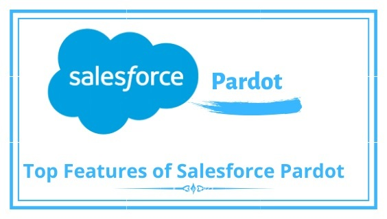

Top Features of Salesforce Pardot

Pardot refers to software as a service (SaaS) marketing automation, a product of the world’s most dominant CRM platform which is Salesforce. It counts among one of the most powerful tools one can have access to in the world of huge enterprises. It is majorly used by the B2B organizations with the aim to serve their audience in a much-improved manner. Moreover, it is not like some regular tool which can fit all sizes, it must be customized and used as per the specific business model considering their long-term interests and requirements along.
More about Salesforce Pardot
Presently, the majority of the audience is already aware of Marketing Automation, but Salesforce Pardot is just a smarter version of the same. It has been helping the majority of the B2B, sales and marketing organizations to reach their desired goals within a limited time frame. Some of its popular advantages include getting complex tasks done in a much simpler manner. The following are a few of them:
- Lead Generation
- Social Media Marketing
- Search Engine Optimization (SEO)
- Tracking the traffic on the website along with customers’ behaviour
- Creating respective reports after tracking the usage
It has been long since people are equipped with its total benefits, but it also makes sure that it is upgraded with all the latest technological trends so that nothing crucial is missed out. Regardless of the industry or channel, Salesforce Pardot can help you effortlessly in order to get more and more clients on board, thus, helping you to generate higher revenue. Every business enterprise we see, have their own ways to do things. Whether it be lead nurturing or conversion, it all depends upon your needs and demands. Keeping these crucial factors in consideration, Pardot has been designed in a way to help people the most.
Advantages of Using Salesforce Pardot
Although there are multiple benefits of using Salesforce Pardot for your business, we are listing a few of them to get started:
1. Align crucial business processes- It aligns your complex processes included in the business, those like marketing as well as sales so that much of time and money is saved simultaneously. It gives you equal access to lead qualification and nurturing for a better understanding of clients’ behaviour.
2. Greater Engagement- It gets you increased engagement of the respective target audience you are working for. It includes your website, social media portals and other relatable things as well. Nurturing your prospects and clients is included in the same.
3. Directly Integrated to Salesforce- Pardot is directly integrated to the Salesforce CRM which means all your data saved on it would be synced automatically. You do not need to duplicate the records or any other information to get started.
4. Effective Marketing Strategies- It also saves the time of your marketing team which usually spends hours tracking up the usage and analysing the reports of the same. Now, you can put up your resources for other important tasks instead of such basic things.
5. Increased ROI- Using Salesforce Pardot can guarantee you an increased ROI ensuring that your investment does not go in vain. It makes sure that you get enough good results if you have invested your money in the same.
6. Dynamic Content- The presence of dynamic content on its platform is really helpful when it comes to getting similar things on the website, social media, landing pages, etc. It is more importantly seen from the engagement’s perspective that whether your content is good enough to grab the attention of the people or not.
The Final Word
We have been already aware of the term ‘Salesforce Pardot’ along with its usage now. Believing in its powers, we can definitely open up a new door to infinite opportunities that lie ahead of us. It can also provide you with immense potential as well as power with the help of which one can easily get a step closer to their dreams. Once you get on board with this powerful tool, there is no turning back. People can be made enough aware of its practical usage and applications to make the best out of it and ensure higher ROI in a limited time frame.
Well, we can say that there are still a few people who are not much aware of Salesforce or its related products. Taking care of them, we have Salesforce Consulting Companies Salesforce Consulting Companies around us which can help people at their best to maximize the generated outputs. These are really useful to the majority of the audience who think they might not be able to utilize the same in the best manner. If you are also among them, you need not worry anymore if you get the help of the right consulting agents at the time who keep your satisfaction as the topmost priority.
Thanks for Providing awesome content Deepak Kushwaha from 360DegreeCloud
Download: SalesforceQA
Please comments us for more updates and share to other to help.
Keep Visiting us for more updates
Like us for more updates
Fb Page : ForceLearn
keep share to help others 😎 😎 😎

 By ForceLearn/header.png)